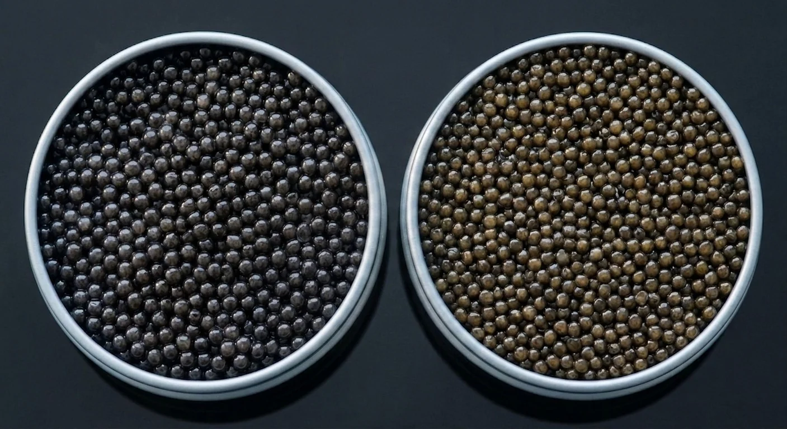
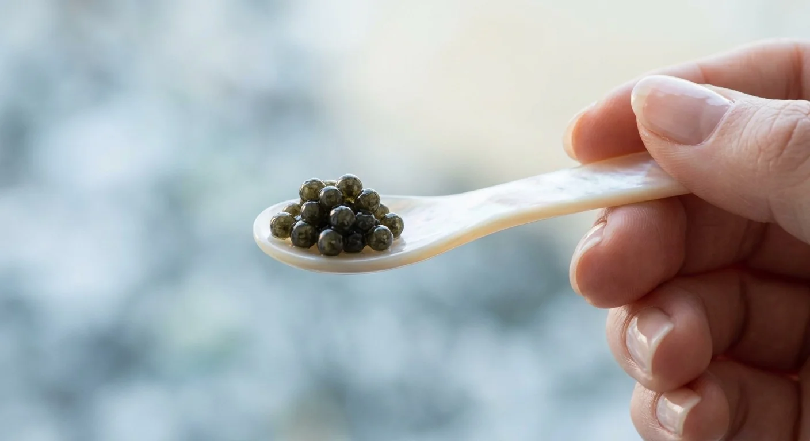

De la sélection à votre table
La Maison MARENOSTRUM
MARENOSTRUM sélectionne et conditionne du caviar d'eau douce élevé en Hongrie, dans le bassin du Danube. Notre rôle : choisir les lots, vérifier leur calibrage, les conditionner sous notre marque, et les livrer à température constante jusqu'à votre cuisine.
Notre histoire
Sélectionner, conditionner, livrer
MARENOSTRUM a vu le jour à Bordeaux, autour d'un principe simple : nous ne sommes pas éleveurs, nous sélectionnons. Nos fondateurs ont noué un partenariat direct avec des éleveurs en Hongrie, dont ils ont visité les bassins et validé les pratiques avant toute relation commerciale.
Chaque lot est goûté et validé par notre maître affineur avant d'être conditionné sous notre marque. Notre rôle : sélectionner, vérifier le calibrage, affiner selon la méthode Malossol, et livrer — lot après lot.


Notre partenaire
Danubius Caviar, notre fournisseur en Hongrie
Dans le bassin du Danube, en Hongrie, nos éleveurs partenaires travaillent en bassins d'eau vive, en circuit fermé, à densité d'élevage volontairement limitée. Danubius Caviar, l'un de nos fournisseurs, alimente déjà des tables étoilées en Hongrie.
Nous nous rendons sur place plusieurs fois par an pour goûter chaque récolte, vérifier les conditions d'élevage et valider la certification CITES de chaque lot. Ce contrôle direct garantit un caviar constant et traçable, du bassin du Danube à notre atelier d'affinage et de conditionnement à Bordeaux.
- Fournisseur
- Danubius Caviar
- Élevage
- Eaux vives, circuit fermé
- Certification
- CITES
- Visites
- Plusieurs fois par an
Nos engagements
Ce qui nous distingue
Sélection exigeante
Nous sélectionnons nos lots directement chez Danubius Caviar et nos autres éleveurs partenaires en Hongrie, dont nous vérifions les pratiques : eaux vives, circuit fermé, sans hormones ni antibiotiques de croissance. Une espèce protégée, dont chaque lot est certifié CITES.
Traçabilité totale
Chaque boîte porte un numéro de lot qui permet de remonter jusqu'à l'éleveur, à la date de récolte et au type d'affinage appliqué.
Affinage Malossol
Un salage léger et traditionnel qui préserve la texture du grain, réalisé à la main par notre maître affineur, lot après lot.
Notre service
Une exigence qui ne s'arrête pas au produit
Un interlocuteur dédié
Le même contact vous suit de la première demande au réassort, pour une relation professionnelle simple et directe.
Devis sous 48h
Une réponse personnalisée, adaptée à vos volumes et à votre destination, sans détour ni relance à faire.
Livraison réfrigérée 24-48h
Colis isotherme et glace pilée, sur commande ponctuelle ou réassort planifié.
Restaurant, hôtel, grossiste